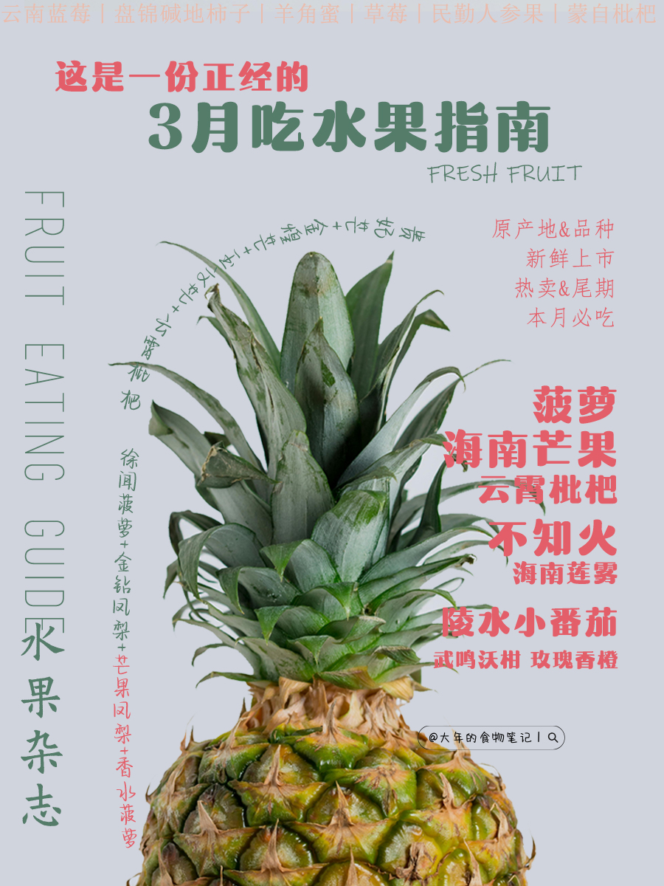
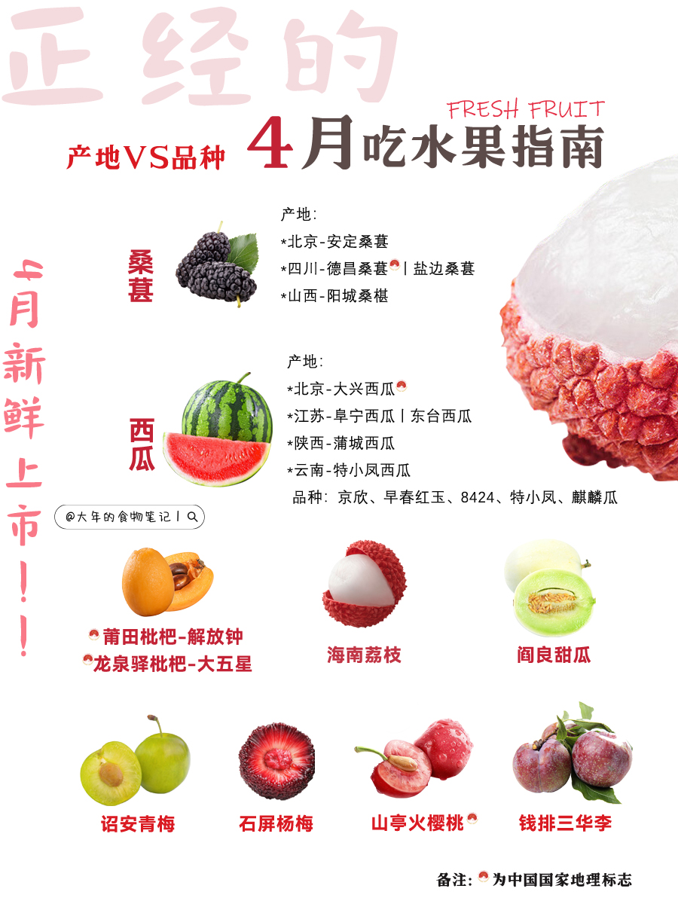

🍓水果知识百科🍌
🔍 水果搜索
📝 时令指南


🎥 水果小课堂
🍎 营养解析
每100g营养成分
- 🍓 草莓：维C 58.8mg | 纤维 2g
- 🍌 香蕉：钾 358mg | 碳水 22g
- 🥝 猕猴桃：维E 1.46mg | 叶酸 25μg
- 🍊 橙子：维C 53.2mg | 钙 40mg

🔍 选购秘籍
1
看外观：表皮光滑无凹陷
2
闻香气：自然果香浓郁
3
掂重量：手感沉实为佳

🍳 果味厨房
🍓草莓大福
材料：
- 草莓 6颗
- 糯米粉 150g
- 红豆沙 120g
步骤：
- 草莓包入豆沙馅
- 糯米皮包裹成型
- 蒸10分钟即可